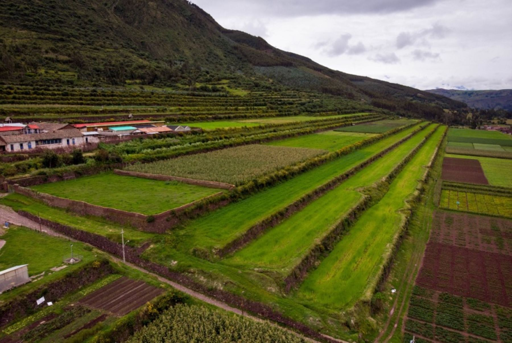
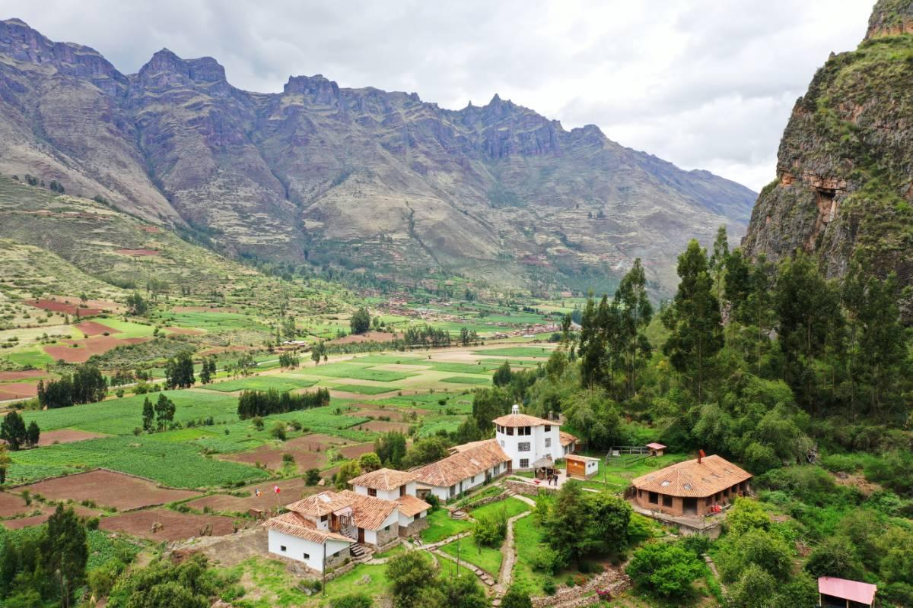
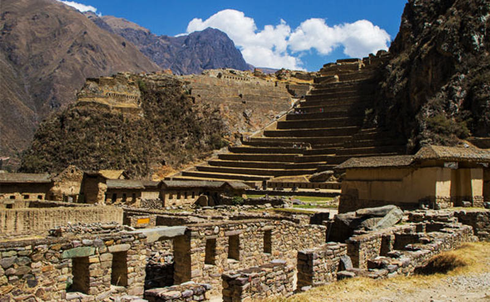
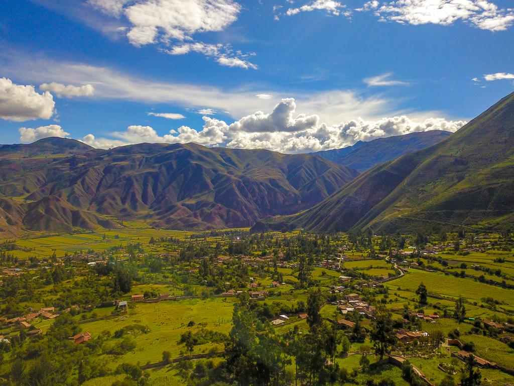

HISTORIA
Dos son las leyendas sobre la fundación de Cusco y ambas se basan en un viaje mítico. La primera leyenda tiene como protagonistas a Manco Cápac y Mama Ocllo, hijos de Inti, el dios Sol, y Quilla, la diosa Luna. Los hermanos partieron de la Isla del Sol, en el lago Titicaca, en busca de un lugar para fundar una ciudad. El lugar elegido fue aquel donde la vara de oro que llevaban consigo se clavó en la tierra de un solo golpe. En la segunda leyenda los protagonistas son cuatro hermanos, compañeros de cuatro hermanas: Mama Guaco y Ayar Cachi, Mama Cora y Ayar Uchu, Mama Rawa y Ayar Aucca, Mama Ocllo y Ayar Manco. Ellos sobrevivieron al diluvio provocado por Wiracocha y salieron de unas cuevas en Pacaritambo, en el cerro Tampu Tocco, para repoblar la Tierra.
ESCUDO

GOBERNADOR REGIONAL
JEAN PAUL BENAVENTE GARCÍA
Jean Paul Benavente García (Cusco, 19 de junio de 1969) es un economista y político peruano. Nació en la ciudad de Cusco, cursó sus estudios primarios en el Colegio Nacional de Ciencias y los secundarios en el Colegio Salesianos. Realizó sus estudios de pregrado en economía en la Universidad Nacional de San Antonio Abad del Cusco (UNSAAC).
Fue docente de dicha universidad desde 1999. Posteriormente realizó las Maestrías de Economía y Políticas Públicas en la Universidad Torcuato Di Tella y la de Globalización y Procesos Económicos y Sociales en la Universidad del País Vasco (España) en convenio con la UNSAAC. Fue Director Regional de Comercio Exterior y Turismo -DIRCETUR Cusco del 2007 al 2009, y Gerente Regional de Desarrollo Económico del Gobierno Regional de Cusco del 2009 al 2010. En el 2021 publicó el libro “Agenda por el Desarrollo Económico Regional, PRENDE CUSCO”, en el 2018 publico “Aplicación de la Cuenta Satélite para un turismo inclusivo y competitivo”, entre otros trabajos de investigación.
Actualmente es Gobernador Regional de Cusco desde el año 2019 a la fecha.
Desde el 1 de enero de 2019 es el actual gobernador regional de Cusco por el partido Acción Popular. En las elecciones regionales de 2018 participó como candidato a gobernador regional por el partido Acción Popular donde obtuvo en primera vuelta el 14.95% de los votos.En la segunda vuelta disputada contra el candidato Luis Wilson Ugarte de Restauración Nacional obtuvo una aplastante victoria con el 70.40% de los votos frente los 29.60% de su contrincante
MAPA DEL DEPARTAMENTO

La provincia tiene una extensión de 719 km². Este departamento se localiza en la parte sur-oriental del territorio nacional y limita con los departamentos de Junín y Ucayali por el norte, Madre de Dios y Puno por el este, Arequipa por el sur-oeste y, Apurímac y Ayacucho por el oeste. Cusco, la ciudad capital, está ubicada a 3 399 m.s.n.m. El departamento de Cusco está dividido políticamente en 13 provincias y 114 distritos.
Su territorio comprende un sector de la región andina en la parte central y meridional de su jurisdicción, y zonas bajas cubiertas por la selva amazónica en su parte septentrional. En esta región se encuentran las primeras civilizaciones andinas con la influencia de Huari y Tiahuanaco. Es también cuna del Tahuantinsuyo y sitio de la resistencia de los Incas de Vilcabamba tras la Conquista del Perú. Es en este departamento, en la hacienda Marcahuasi (Mollepata), donde en el siglo XVI se cultiva la primera vid del continente americano y se produce el primer pisco. Sus principales recursos agrícolas son el maíz, la cebada, la quinua, el té y el café. En minería sobresale el oro y en energía el gas.
PROVINCIAS DEL CUSCO
- ACOMAYO: La provincia de Acomayo tiene 7 distritos:
- Acomayo
- Acopia
- Acos
- Mosoc Llacta
- Pomacanchi
- Rondocan
- Sangarará
- ANTA: Cuenta con 9 distritos:
- Ancahuasi
- Anta
- Cachimayo
- Chinchaypujio
- Huarocondo
- Limatambo
- Mollepata
- Pucyura
- Zurite
- CALCA: Esta provincia tiene 8 distritos:
- Calca
- Coya
- Lamay
- Lares
- Pisac
- San Salvador
- Taray
- Yanatile
- CANAS: Tiene 8 distritos:
- Checca
- Kunturkanki
- Langui
- Layo
- Pampamarca
- Quehue
- Túpac Amaru
- Yanaoca
- CANCHIS: Cuenta con 8 distritos:
- Checacupe
- Combapata
- Marangani
- Pitumarca
- San Pablo
- San Pedro
- Sicuani
- Tinta
- CHUMBIVILCAS: Tiene 8 distritos:
- Capacmarca
- Colquemarca
- Chamaca
- Livitaca
- Llusco
- Quiñota
- Santo Tomás
- Velille
- CUSCO: Posee 8 distritos:
- Ccorca
- Cusco
- Poroy
- San Jerónimo
- San Sebastián
- Santiago
- Saylla
- Wanchaq
- ESPINAR: Esta provincia posee 8 distritos:
- Alto Pichigua
- Condoroma
- Coporaque
- Espinar
- Ocoruro
- Pallpata
- Pichigua
- Suyckutambo
- LA CONVENCIÓN: Tiene 14 distritos:
- Echarati
- Huayopata
- Inkawasi
- Kimbiri
- Maranura
- Megantoni
- Ocobamba
- Pichari
- Quellouno
- Santa Ana
- Santa Teresa
- Vilcabamba
- Villa Kintiarina
- Villa Virgen
- PARURO: Posee 9 distiritos:
- Accha
- Ccapi
- Colcha
- Huanoquite
- Omacha
- Paccaritambo
- Paruro
- Pillpinto
- Yaurisque
- PAUCARTAMBO: Cuenta con 6 distritos:
- Caicay
- Challabamba
- Colquepata
- Huancarani
- Kosñipata
- Paucartambo
- QUISPICANCHI: Posee 12 distritos:
- Andahuaylillas
- Camanti
- Ccarhuayo
- Ccatcca
- Cusipata
- Huaro
- Lucre
- Marcapata
- Ocongate
- Oropesa
- Quiquijana
- Urcos
- URUBAMBA: Tiene 7 distritos:
- Chinchero
- Huayllabamba
- Machupicchu
- Maras
- Ollantaytambo
- Urubamba
- Yucay






PÁGINAS DE REFERENCIAS
- Página oficial de la Municipalidad del Cusco
- Página de Facebook de la Municipalidad del Cusco
- Página oficial de Machupicchu